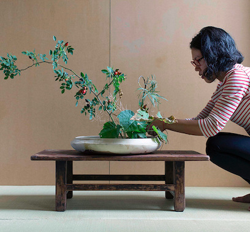

Rie Ono
Botanical Artist

Photo by Martina della Valle
Summary
Rie Ono was born in Atami, Japan in 1977.
She studied SOGETSU ikebana (Japanese flower arrangement art) at Hinata Ikebana Studio in Tokyo, Japan, from 2007 to 2013, and completed the fourth-grade teacher’s course in 2013.
From 2014 to 2017, she lived in Berlin, Germany, where she held exhibitions, created artworks, and conducted workshops across Europe.
Since 2018, she has been based in Yokohama, Japan, continuing her artistic practice.
Biography
- 22.07.2019 — Ikebana installation “Hidden People’s Tea Party” in collaboration with Arnbjörg Kristín Konráðsdóttir at gilfelagiddeiglan in Akureyri, Iceland.
- 22.06–29.07.2017 — Ikebana installation "abandoned #2" with Martina della Valle as a part of "flowers are documents Ⅱ" curated by Emanuele Guidi at AR/GE KUNST, Bolzano Bozen, Italy.
- 06.12.2016 — Ikebana workshop "one flower, one leaf #2" with Martina della Valle at MAXXI, Rome, Italy.
- 30.09–15.10.2016 — Ikebana installation "abandoned #1" for solo exhibition "wabi-sabi" for Martina della Valle at Dryphoto Arte Contemporanea, Prato, Italy.
- 24–25.09.2016 — Ikebana workshop "one flower, one leaf #1" with Martina della Valle at Dryphoto Arte Contemporanea, Prato, Italy.
Media Coverage
- 07.09.2016 — "Wabi sabi" Essen a taste magazine (IT)
- 21.05.2015 — "Interview with Ms. Rie Ono, who teaches Ikebana in Germany." Tadaima Japan (EN/JP)